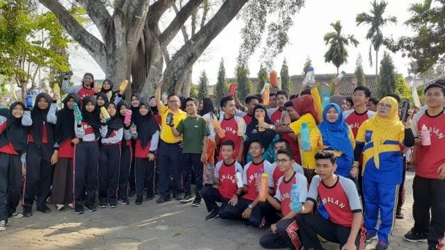

Disdikbud Lampung Deklarasi Eco-Office di SMA Negeri 9 Bandar Lampung
Dinas Pendidikan dan Kebudayaan (Disdikbud) Provinsi Lampung bergerak cepat dalam melakukan sosialisasi program kantor ramah lingkungan (Eco-Office).
Usai melakukan deklarasi Eco-Office di halaman kantor Disdikbud Lampung, Rabu (2/10) lalu, kini Kepala Disdikbud Sulpakar keliling ke sekolah-sekolah mengkampanyekan pengurangan sampah dari plastik dan kaleng.
Hari ini, Jum’at (4/10), Sulpakar deklarasi Eco-Office di SMAN 9 Bandarlampung. Sebelum melakukan deklarasi Eco-Office dan penggunaan Thumbler, Sulpakar bersama Kepala SMAN 9 Bandarlampung Suharto, para guru, staff dan siswa melakukan senam pagi.
